In this lesson, we explore how to download and use spatial data from OpenStreetMap. We will use OSM data to feed a simple analysis using the buffer geoprocessing tool.
We've run into OpenStreetMap (OSM) a few times in previous modules, but have not used it as a data source, yet. In the last module, you might have used OSM to practice digitizing and editing vector data. In this lesson, we'll download data from OSM, style it, and do a buffer analysis technique using OSM data.
OpenStreetMap is the world's largest crowdsourced mapping project. It is a free, open-source, volunteer-generated global map that aims to be the "Wikipedia of maps" and global GIS data repository. As of February 2017 OSM stats, there were 3.5 million registered users and 5.7 billion GPS points uploaded.
The OSM project started in the United Kingdom in 2004, with a single guy riding his bike through London collecting GPS data. The intent was to create an open-source map that could rival the government-made Ordinance Maps. As you can see in this visualization of the first five years of map edits in the London area, progress was slow with users adding tiny pieces of the map as they collected the data themselves. Compare this to the first five years of American map edits. In the United States, US Census TIGER data, which is public data, was able to be added to the map, filling it in rather quickly. If you watch the video closely, you'll see little flashes as county and state level data are brought in in large chunks.
Another interesting way to visualize OpenStreetMap is this map by Alex Barth, which uses color to group the edits made to the map by each user. Show Me the Way lets you view real-time edits to OSM. The purpose here is to illustrate that OSM is a gigantic and dynamic data source.
As we have seen in the geocoding exercise, the quality of some services vary. However, OSM has emerged recently as the best single source for consistent, well-attributed global vector data to use in your mapping project.
Crowdsourcing relies on the wisdom of the crowd, which it turns out is pretty reliable. It appears that those amateurs aren't so amateur after all (Brabham, 2012). Research has shown that OSM maps are comparable in accuracy and quality to government-made maps (Haklay, 2010). The OSM user community is hyper-vigilant against map vandalism – the intentional addition of incorrect or false information to the map – to the point of it being one of the few ways that a user can be banned from using OSM. Google Map Maker, Google's attempt to recreate the ethos of OSM, is not so good at this.
The biggest liability in OSM data isn't its accuracy, but rather it's potential myopathy. While a good deal of the background map data in the US comes from the government sources, the more local knowledge (business names, bike trails, etc.) are created by users who tend to map things they find interesting. Monica Stephens (2013) noted that this leads to the interests of the largely male, well-educated and overwhelmingly German user-base dominating the map. (Check out Monica's SheepCamp presentation "Guns, Germans and OpenStreetMap.".)
To be clear, maps have always been biased by the interests and cultural norms of their makers (Harley, 1989) and this is not unique to OSM. The data is accurate but potentially limited by who makes it (Haklay, 2013). In OSM, that's potentially 3.5 million data makers contributing their interests.
First and foremost, it's free to use and modify. OSM is licensed under a Creative Commons Attribution-ShareAlike 4.0 license (CC BY-SA). OSM grants users the right to use their map data for free so long as they attribute the data to OSM. If we can see it on openstreetmap.com, we can download it and freely make maps in QGIS.
A Google Maps license is much more restrictive. Google Maps does have amazing imagery, both satellite and on-the-ground via StreetView that can be used for base maps, but we cannot harvest vector data as we can in OSM.
OSM has a basic data structure with a few important elements. The node, or coordinate point, is the basic geographic object. A node represents a specific point on the earth's surface. Each node comprises at least an id number and a pair of coordinates. Nodes can be combined into ways; an open way is a polyline and a closed way is a polygon. OSM data uses only WGS84 coordinates. Relations group geographic objects in familiar relationships, such as routes (bus routes in a city) and multi-polygons (many closed ways belong to the same group).
OpenStreetMap uses tags of the form key=value to add meaning to geographic objects. For example, we could use the following query to find all building polygons that are tagged as 'residential': "building" = 'residential'. Using familiar SQL statements, we can easily filter large datasets to map precisely what we want.
For standard tag meaning, you can reference the OSM wiki for specific key values. These are all the items with which a user may tag an object in the OSM editor. Another similar resource is TagFinder which is modeled as a search engine. The TagInfo site is companion resource for looking at statistics of tag usage. TagFinder includes information from, and links back to, TagInfo.
The OSM data format that we can download directly from the OSM's website is the .osm file format, a plain-text XML standard unique to OSM. This format can be large if not compressed, but it is easily read and parsed. We have numerous methods to extract features from an .osm file, including QGIS plugins and utilities outside of QGIS.
There is a built-in feature within QGIS for importing OSM data and even editing/adding features to OSM. If you open QGIS's main menu > Vector > OpenStreetMap > Download data... you can download massive datasets to use in QGIS. This worked fine until recently. With the growth of OSM contributions, the website now uses 64-bit identifiers to uniquely identify these new nodes users are submitting. This import method in QGIS cannot yet use these IDs (because of reported issues) and any topology created will not include new features.
We have two opportunities to work around this flaw in QGIS:
We'll talk about these opportunities in the next sections.
Let's collect data from inside QGIS with the plugin, QuickOSM, which can be installed via the Plugin Manager. Once installed, you can access the plugin via the Web menu drop-down or with the green icon in QGIS's toolbar. The plugin has a detailed help documentation.
This plugin offers one of the easiest methods for harvesting OSM data. QuickOSM will allow you download OSM vector layers by location name, extent of map canvas, and extent of a layer, but it limits the amount of data you can pull down at one time. This plugin uses the Overpass API, which is optimized for delivering data requests to clients in multiple formats, e.g., GeoJSON or Shapefile downloads. QuickOSM has a convenient link to OSM's Help with key/value website. It will also process .osm files, too.
First, let's zoom to an area of interest for which you are very familiar to download data (use the OpenLayers plugin for a base map). Configure the Parameters tab to download GeoJSON formatted data:
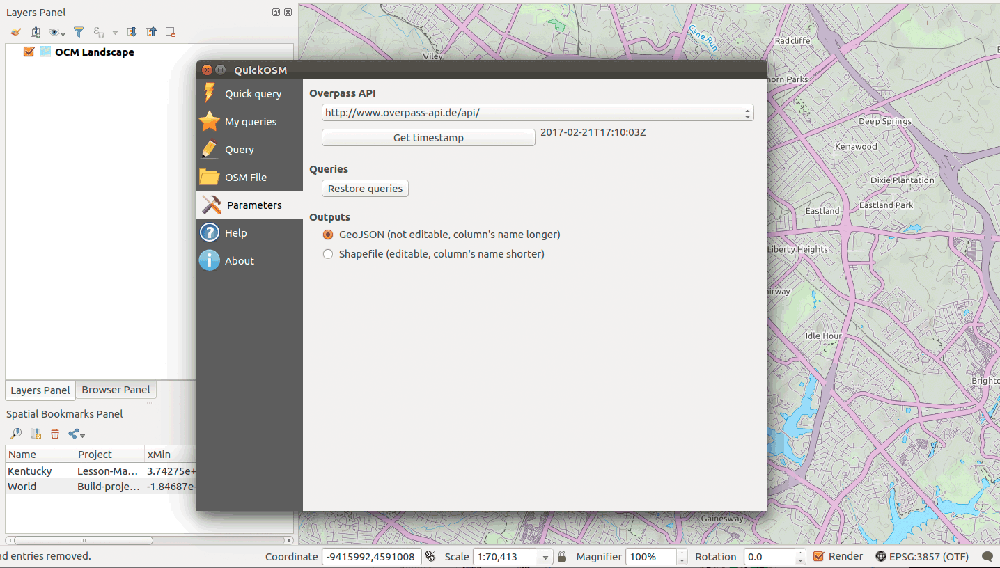 Figure 01: Using QuickOSM to download GeoJSON formatted data
Now, let's make a query and download GeoJSON layers. The goal is to not query too much data at once. It's hard to say what the limit is, but you'll know it when you see it. Add a polygon feature, such as the county containing your area of interest. Select Quick Query and set the Extent of a layer to your polygon and select the Highway as your Key. Leave the Value dropdown empty, which will select all types of highways:
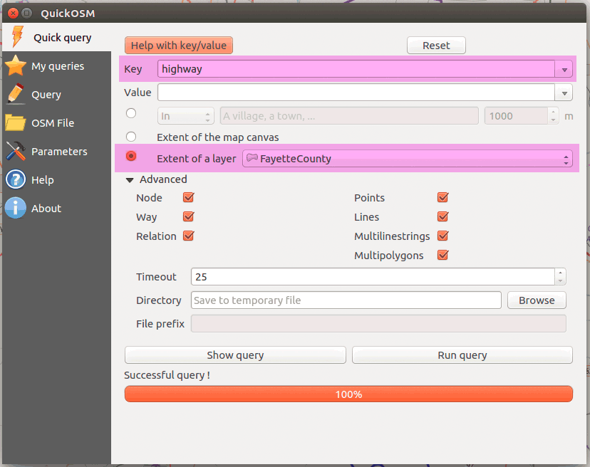 Figure 02: Download highway OSM data for the extent of a layer
Then hit Run query and it should populate your Layers Panel with point, line, and polygon vector data for the key 'highway.' We can easily identify highways as line features, but what points and polygons? Explore the attribute tables, select a record, and Zoom to selected feature to inspect the feature.
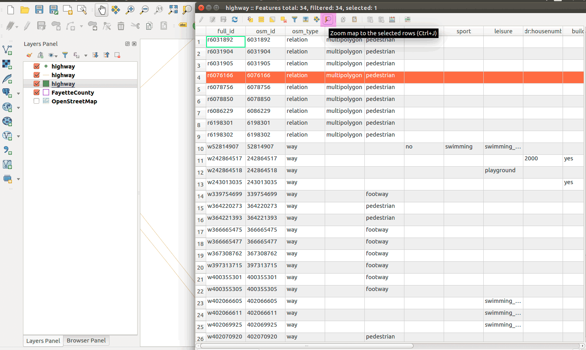 Figure 03: Download highway OSM data for the extent of a layer
Use the Identify tool to view attributes of individual features. Select the layer you want to explore in the Layers Panel and click a feature in the layer on the Map Canvas. If you double-click the feature, you should find a popup window listing all of the key/values for that feature.
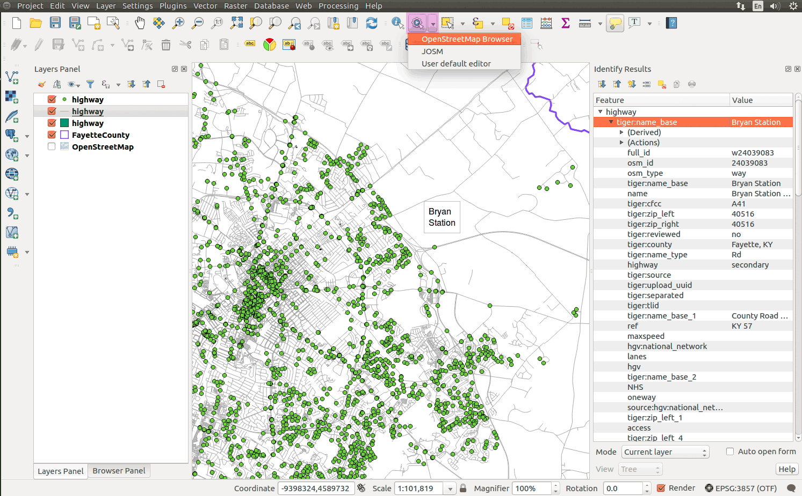 Figure 04: Using Run Feature Action Tool to open OpenStreetMap's attribute explorer and iD editor.
QuickOSM adds useful functions to the Run Feature Action tool. Using the tool's OpenStreetMap Browser option, you can click a feature, e.g., a highway segment and a browser will open a webpage showing that feature in OpenStreetMap with information about who digitized this feature and when. If a feature in the layer has a Wikipedia entry or website, wikipedia and website options will be added. Not all objects will have entries; if you select one with an empty entry, you will find the following message, dude:
Figure 05: It's time to login into OSM and add an attribute for this feature!
If you have an OSM account, the Run Feature Action > User default editor option will open an OSM edit session for a selected feature. From Lesson 05, you should have been exposed to OSM's editor iD. This offers support to help you digitize features in your neighborhood and contribute great data to OSM.
If you keep adding layers from QuickOSM, you could quickly make a map very similar to OpenStreetMap; in fact, you have access to it all. You can sort through the key=value relationship and identify the attribute you wish symbolize; you have no limit on the type of map you can make. However, what if you find that QuickOSM is limiting the amount of data you can download?
Do you need more data than QuickOSM can deliver? We have a few options to collect massive datasets.
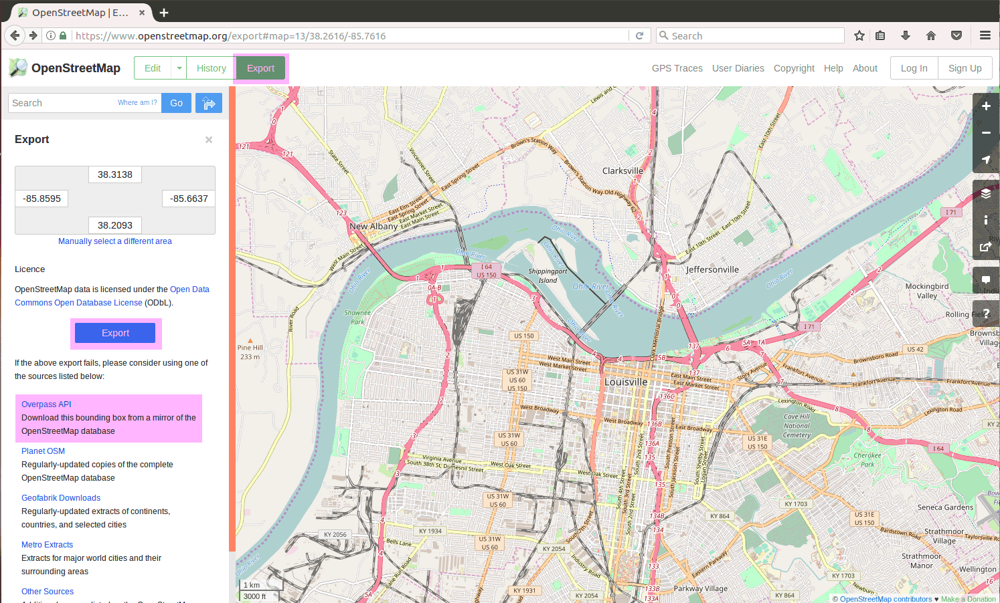
Figure 06: Download data from OSM directly
Visit the http://openstreetmap.com/export and find your area of interest. Click in the Manually select a different area to adjust your download area. If you need a small area, you can Export and download your data straight from OSM. The file will start downloading with the file name map.osm. If you find an error after clicking Export, then you are requesting too much data from OSM. If so, click on Overpass API link to download your data. The Overpass API is optimized for delivering data request to clients, whereas the default OpenStreetMap API is optimized for editing features on the map. You can get large exports from the Overpass API. However, you'll need to add the ".osm" file extension to download, which is called "map."
If you want continental-scale datasets, you should visit some of the sites listed on this page. Geofabrik hosts country-level data extracts for nations worldwide and is updated weekly. Planet OSM is the complete OSM database and extracts out to about 1 TB of data, a fairly ambitious project for a weekend.
MapZen hosts city-level datasets for some US and international cities updated daily. The most impressive feature that MapZen offers for OSM and QGIS users is the ability to create custom extracts for any area of interest and is provided in multiple data formats:
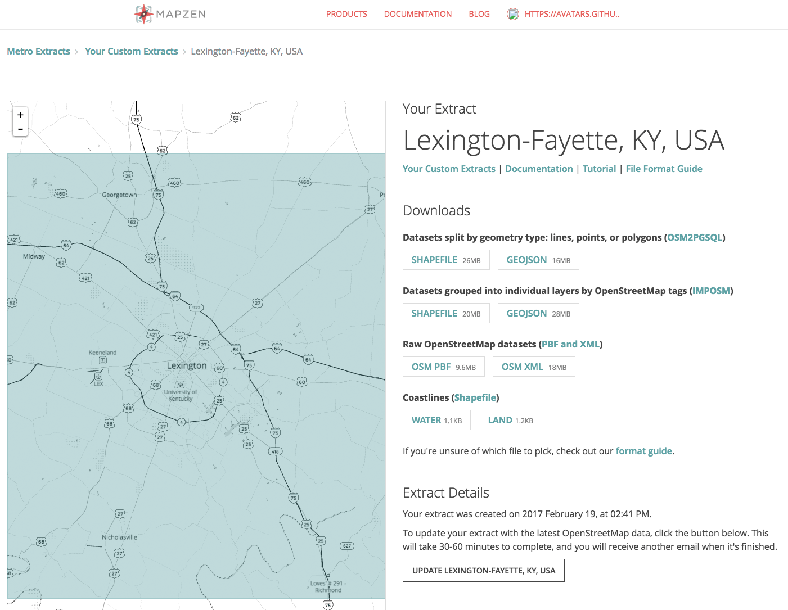
Figure 07: Download data from MapZen
These extracts are offered in GeoJSON, Shapefile, and the native OSM XML format (the .osm file or a compressed version). If you want to use MapZen, you'll need to setup a GitHub user account. Use your uky.edu email address, since it gives you some unique advantages on GitHub, such as private repositories.
Another important distinction between MapZen and QuickOSM data is attribute field names. In QuickOSM data, the key is also the name of the primary attribute field, e.g., the key name 'highway' is also the field name 'highway' we would use to classify and symbolize features in a layer. In MapZen data extracts, this field name is renamed to 'type.'
Once you've downloaded these large datasets as a .osm file format, we have a few ways to use them effectively in QGIS. The easiest way to get these layers into QGIS is via the Add Vector Data dialog, which can parse any .osm file and pull in desired feature types. This can be an exciting or nerve-wracking endeavor depending on your state of mind.
QuickOSM can process .osm files using the OSM File feature, which will create layers like the Quick Query. You should experiment with the osmconf.ini configuration file to custom filter your data, which has #comments for guidance of use.
It quickly becomes obvious that OSM data has a lot of attributes and, depending on your area, not entirely consistent coverage for certain feature types, e.g., point features in the key 'highway' showing traffic lights (again, another reason to join OSM and fill out incompletely documented areas). There is so much data to symbolize; we can easily miss the forest for the trees.
Most keys will have such a dominant feature type and should be obvious in many cases. For example, highways are lines, as are railways and cycleways. Notice the 'ways' in the keys' name? Some keys have secondary feature types. Waterways are both polygons and lines. Dominant feature type in land use is the polygon, while for amenity it is the point.
Let's symbolize line feature type for highways. In QuickOSM data, the main attribute field used to classify keys is the key name, e.g., 'highway.' In MapZen data, the field name is called 'type,' but they both contain the same values. Open the highway line layer properties Style tab and select Categorized method of symbology using the highway field:
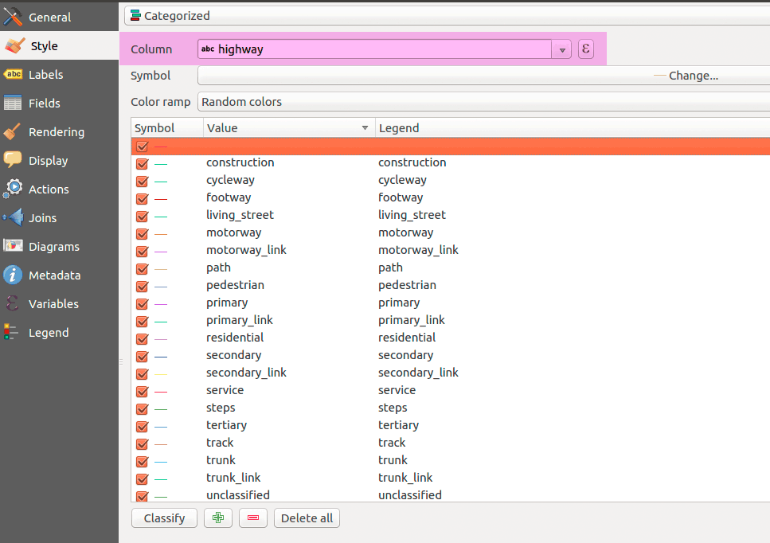 Figure 08: QuickOSM brings in all vector geometries for the key "amenities" in the WGS84 CRS. Use the Identity Tool to see attributes by feature.
If you double-click symbol type, you can add unique symbols for residential roads, motorways, trunk roads, etc. We need first to recognize how OSM orders the types, e.g., what is a trunk compared to primary highway? Let's look at the OSM wiki to explain the highway key: http://wiki.openstreetmap.org/wiki/Key:highway. This page gives us the definition of the key's value and its symbol on OpenStreetMap. We could labor to make this symbology via the Categorized method, but instead, let's leverage QGIS's Rule-based symbology which uses SQL to filter and symbolize data 'on-the-fly'.
QuickOSM is a convenient method to harvest data from OSM, but it only temporarily saves your layers as virtual layers. If you remove them from your Layers Panel, they will be deleted. In our workflow, we can create two layers from an OSM import:
A GeoJSON with full coordinate precision (or no less than 8) to maintain accuracy of location. You can save it with the original CRS, WGS84, but since this is a derivative data, you can save it using the local CRS, e.g, in Kentucky, we use EPSG: 3089. Polygon features have a special requirement we'll address in a below discussion. This will be our source data representing a raw extract from QuickOSM.
A spatial database layer, since we'll use SQL to help make symbology (and later for geoprocessing). If we are working in small area, we would import these layers using a local CRS. For Kentucky, we use EPSG: 3089. If you are working in a different area, then select a suitable CRS for your area. We provide more discussion about CRSs in the below Addendum.
You do not need to save your layers in a spatial database. The advantage is being able to practice your queries to select features you want to symbolize. Later in the lesson, when we use rule-based symbology, SQL is the language we use to create the rules.
Let's create a new database or schema. Give it an appropriate name, e.g., OSM_Lexington_EPSG_3089.sqlite, and import our first layer, the highway GeoJSON layer:
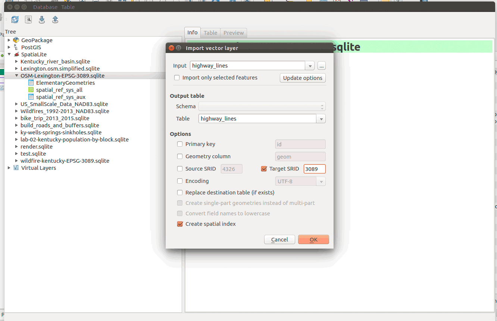
Figure 09: Import OSM layers into a database
Next, let's illustrate how we would do this with polygon layers, which are structured a little differently. Use the following key:value pair to harvest ponds and lakes for your area:
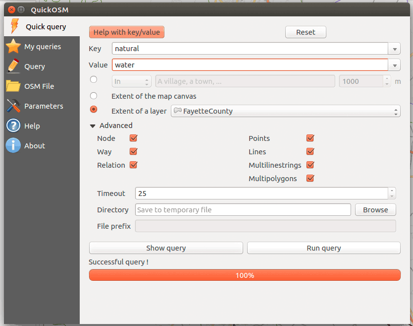
Figure 10: Get lakes and ponds with the Natural=Water tag with QuickOSM
Then, save the OSM layer in the original CRS. In the Geometry section, select Polygon, and enable Force multi-type. This extra step is to prevent an error when importing into a SpatiaLite database. It will not "break" the data as multi-part features can contain single-part features.
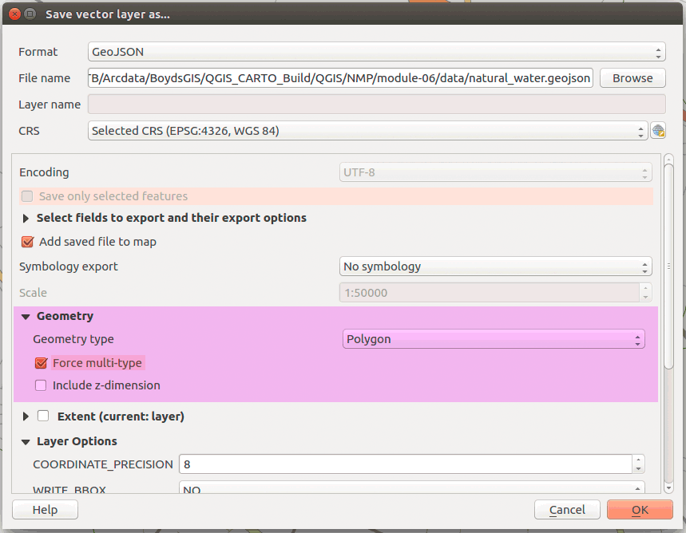
Figure 11: Save polygon GeoJSONs with "Force multi-type" enabled
Finally, import the layer into the database.
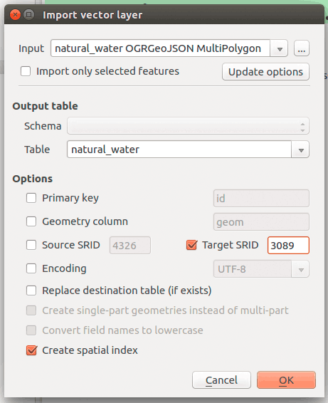
Figure 12: Import into SpatiaLite database with local coordinate system
The goal is to have a folder of GeoJSONs that are unaltered extracts from OSM as a backup and a database of these same layers projected to our local CRS. We'll continue working with the database layers to show how to make queries for symbology.
Once we have our layers in the database, let's look at counts of types. In this case, we'll look at highway types:
/* Count and rank distinct highway types in your data */
select
count(*) as count,
highway
from
highway_lines
group by highway
order by count desc
This query outputs the following:
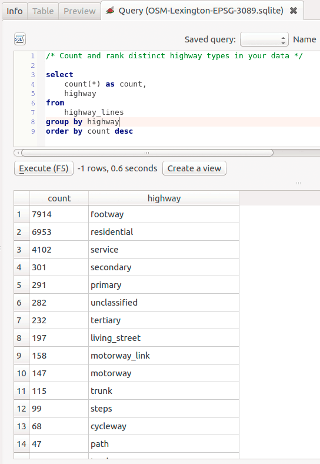
Figure 13: Count number of different highway types
This summary tells us we have a lot of footway features, which in my case are mostly sidewalks. Now, compare that to all the other feature types. Symbolizing 20 different types of highways and making it look good can be a daunting task. We could organize roads into five different types by querying out different groups:
Let's make a few queries that will group these types and count the total number.
/* Count motorways (limited access roads) */
select
count(*) as count
from
highway_lines
where
"highway" = 'motorway'
/* Simple enough! */
Now our Primary roads using the in operator:
/* Count primary roads (big roads and access ramps to motorways) */
select
count(*) as count
from
highway_lines
where
"highway" IN ( 'motorway_link','trunk','primary')
Now secondary roads:
/* Count secondary roads */
select
count(*) as count
from
highway_lines
where
"highway" IN ( 'trunk_link','primary_link','secondary','secondary_link','road','tertiary','tertiary_link')
Local roads using the not in operator to select everything outside the other roads. You could explicitly say which are local roads, but if you have a lot of types you'll need to do more typing.
/* Count local roads (roads not counted elsewhere) */
select
count(*) as count
from
highway_lines
where
"highway" NOT IN ('motorway','motorway_link','trunk','primary','trunk_link','primary_link','secondary','secondary_link','road','tertiary','tertiary_link', 'cycleway', 'pedestrian','footway', 'steps', 'path', 'track' )
You might think you add a geom field and load these queries as new layers and apply symbology. That would work, but that would be more work than necessary. We can create a layer style that combines these queries into one definition in the rule-based method of symbolization.
If we can group our features with SQL queries, then we can leverage rule-based symbology to put our queries in one style definition. Since we're using common tags, this definition can then be applied to regions; build it once and use it everywhere. The style can be shared with other users as a plain-text file that we create in a layer's Style tab.
We won't need the whole SQL statement we developed earlier. We need just the statement defined by the where clause. To symbolize just 'motorways', we'll need only "highway" = 'motorway'. Let's open the highway layer's Style properties, select Rule-based symbolization method, and click Add rule:
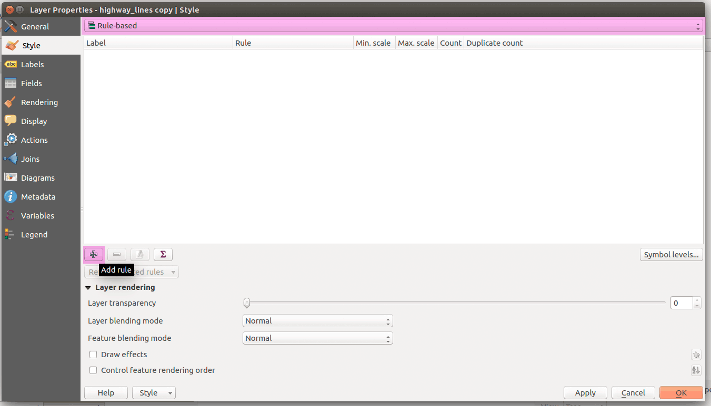
Figure 14: Add new rule for symbology
Copy the "highway" = 'motorway' and paste into the Filter dialog. Alternatively, you could use the Expression Builder denoted by the ... button to the right of the dialog to build the query. Click Test and compared to the count you made in the previous section.
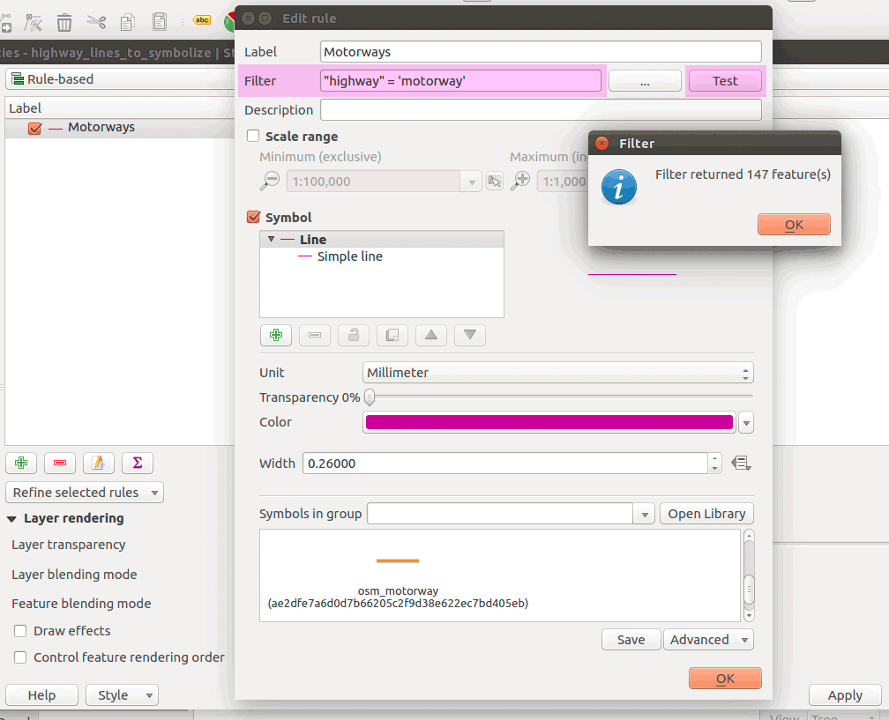
Figure 15: Add Filter using the SQL where statement content
After you verify that your query selected features, let's build a cased line symbol. Click on the Add symbol layer and create two lines; one line layer is wider, darker and the lowest layer, while the thinner, lighter line is the top layer.
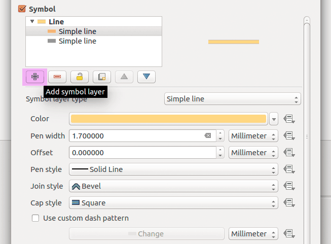
Figure 16: Add Symbol layers to build a cased line
Click OK and then Apply the style to the layer. You should find that only motorways are shown:
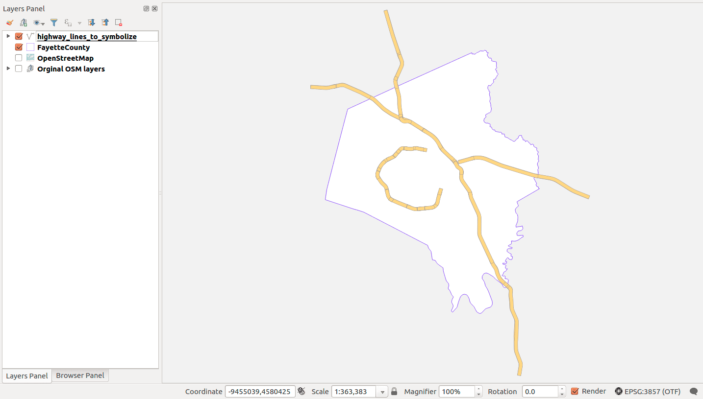
Figure 17: Motorways are symbolized
You might observe that the cased lines don't layer properly. We need to open our layer's Style tab and enable Symbol levels. Then, make the top layer symbols a higher draw order. "0" levels are drawn first, level "1" are next, etc. Hit OK and apply the style.
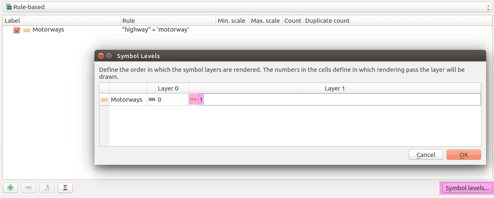
Figure 18: Motorways are symbolized
Let's add the next group of roads, our 'Primary' roads definition "highway" IN ( 'motorway_link','trunk','primary') and apply another cased line symbol, making them slightly less prominent than the motorway symbols. Don't forget to change the symbol levels for this new line.
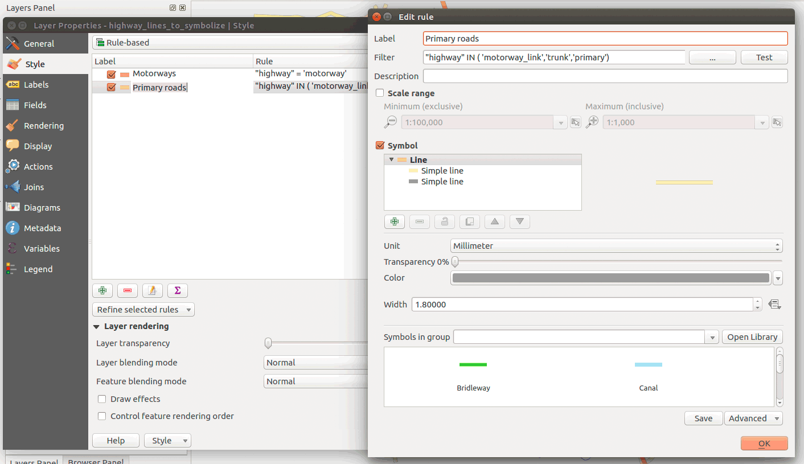
Figure 19: Primary roads are symbolized
If you apply the style, you should notice that symbol levels need to be adjusted. We need to make the symbol levels work for both the primary roads, but also with motorways. We can order layers such that the motorway's top symbol layer is always on top:
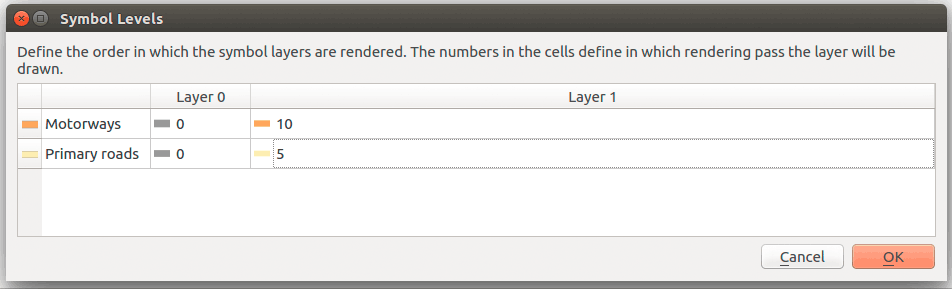
Figure 20: Symbol levels that how motorways top layer as most prominent
The numbers for symbol levels are relative and we add enough spacing to accommodate the next road groups to the definition. Rough-in your styles for these roads such that you have definitions for the four road type groups:
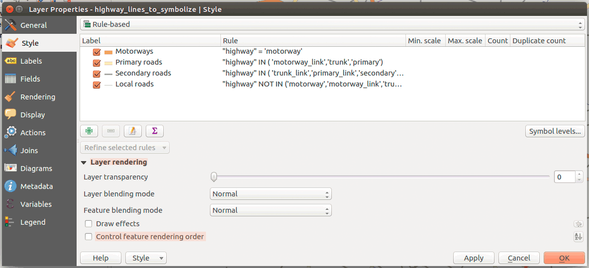
Figure 21: Basic symbol definition for highways with four groups
When we symbolize these features, wouldn't it be nice to have them change appearance based on scale? One significant property of 'slippy' maps is how symbols change at different zoom levels. In QGIS we can assign styles for different scale ranges, giving the same appearance as these interactive maps.
Right-click each rule and select Refine current rule > Add scales to rule. Let's add a few scale ranges: 10000,50000 which will process out to the following scale ranges (with a little modification in each symbol's scale options):
These values are arbitrary. We want to make our symbols more prominent as we zoom in (increase scale). When the scale ranges are added, the initial symbol is propagated through the scale ranges. Click each symbol instance and change the symbols' width so that when you zoom out, the widths get smaller:
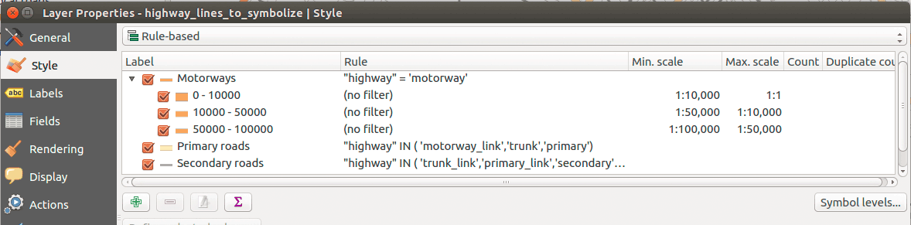
Figure 22: Add scale ranges with custom symbols
We have nested rules inside the Motorways primary rule. When any nested rule is matched, it will overwrite the primary rule. Let's take a look at the Symbol levels after we added scale rules:
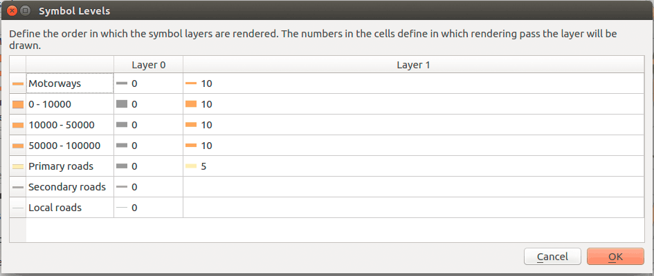
Figure 23: The new symbol levels were automatically generated
OK, let's finish out the rule set for highways. Make each highway group become increasingly more significant as we zoom into a map. This will take some practice, but try to develop a style scheme that looks good at multiple zoom levels:
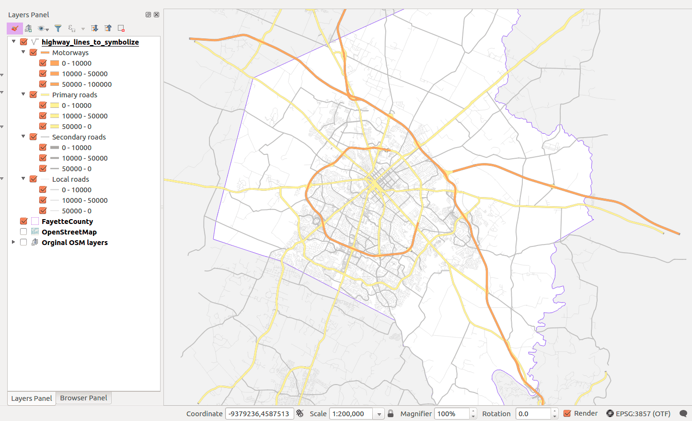
Figure 24: Rules for highway symbology
Our highway layer has footways (sidewalks) and cycle tracks (paved shared-use paths) that we haven't added to our rules, yet. Let's add them, but only show them when we're zoomed at a close scale:
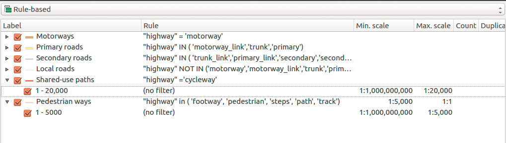
Figure 25: Adding pedestrian and cycleway paths at fixed zoom level
When you have a rule set that you like, make sure you save the layer's style to .qml file, QGIS's markup language format for sharing style definitions. Access it via the layer's properties style tab with drop-down Style > Save Style > QGIS Layer Style File. Once you save this style, you can Load Style in other projects and share it online:
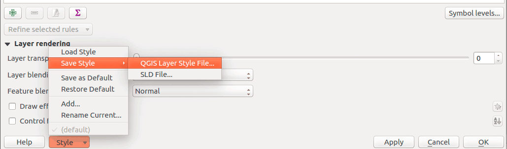
Figure 26: Save Style to a QML file
Note, a copy of this style definition is posted in Canvas for this module.
Using the what we have learned so far, let's make a simple base map showing highways, waterways (line and polygon), and parks from the land use key (polygon), and water from the natural key (polygon). After you apply some queries and styles, your map might look like this:
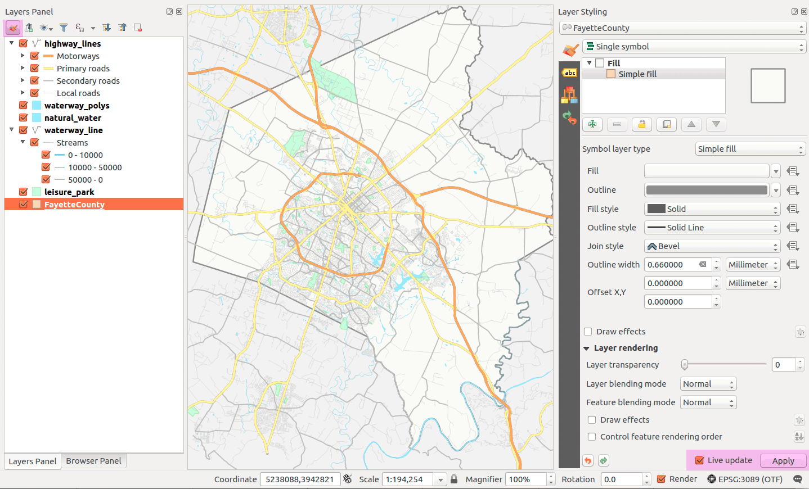
Figure 27: Styling layers in real-time using style dock
You might find the window Open layer styling dock (located in the button row beneath the "Layers Panel" title) might help speed up making your styles.
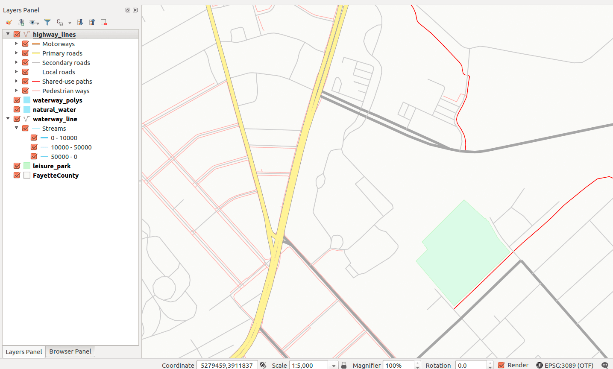
Figure 28: Zoomed in with all layers active.
Geoprocessing is broadly defined as a workflow of GIS functions, where each function has an input layer, a vector data operation, and an output layer. The classic example is the buffer geoprocessing tool, which we'll do in this lesson and lab. Imagine if you wanted to locate all parks within one mile of a cafe. You first would want to know how far one mile is from each cafe. Using the buffer tool, you input the point layer of cafe locations, the creates a circular polygon with a radius of one mile around each point, and the output is a new polygon layer. You can then select all features from another layer that are within that cafe buffer. You could also find locations with more than one cafe within one mile. How nice that must be!
Let's introduce the tools. Under Vector > Geoprocessing Tools you'll find a drop-down menu containing a list of tools. These tools represent the basic ways that spatial data can be overlaid and analyzed in GIS. We'll explore these in more detail in the next lesson, though you might recognize a few of these tools.
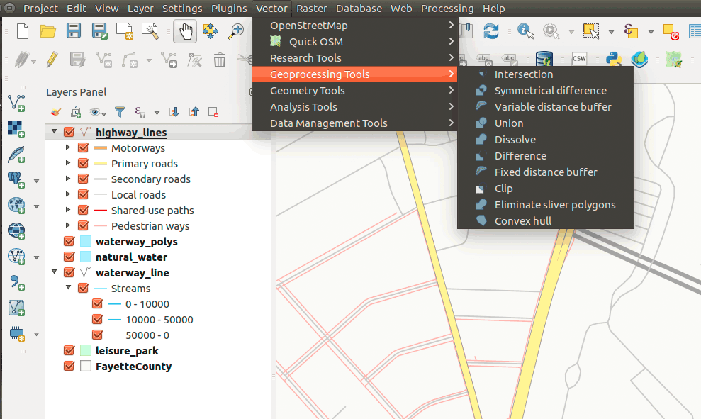
Figure 29: Geoprocessing tools in QGIS
Before we start, let's get some OSM data with a search for the tag amenities:cafe with the following query:
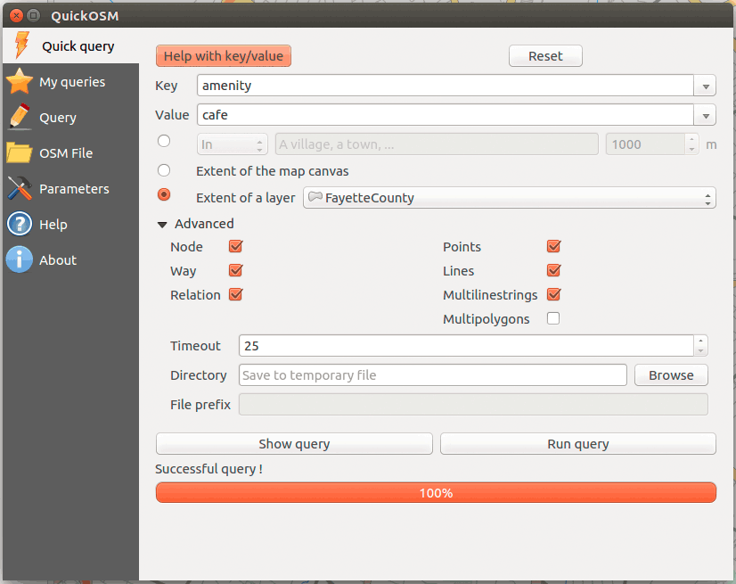
Figure 30: Get cafe amenities from OSM
Finally, load the point layer into your SpatiaLite database, making sure you put it in the correct projected CRS:
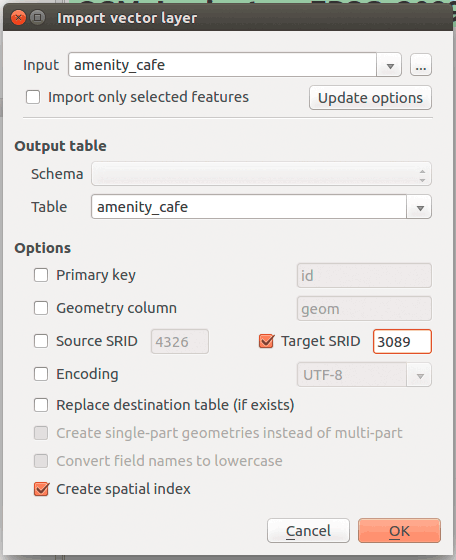
Figure 31: Import layer into database
Remove the virtual amenities layer and add the projected amenities layer to the Map Canvas. Geoprocessing tools must use layers in a projected CRS.
Launch the buffer tool via QGIS menu Vector > Geoprocessing Tools > Fixed distance buffer You have a couple parameters you need to set:
Let's make our first buffer:
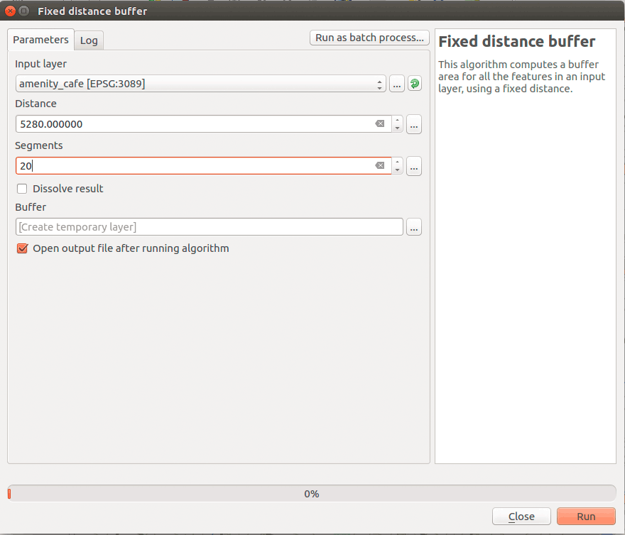
Figure 32: Buffer tool settings
The tool should create a stack of circles showing areas within one mile of a cafe:
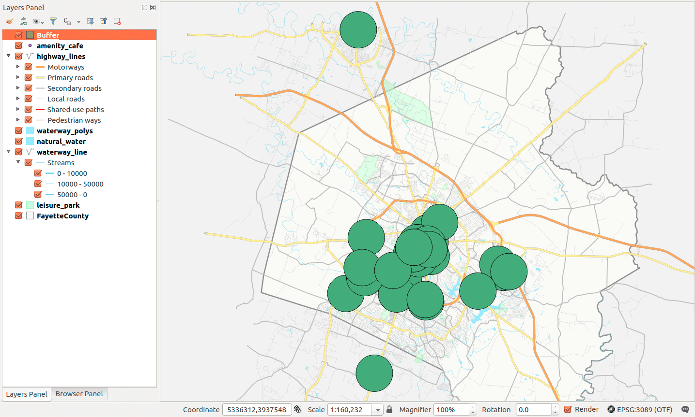
Figure 33: Buffer tool output
As we explored in the previous lessons, let's symbolize this polygon layer to imply density of areas served by cafes. Adjust the layer's style properties by adjusting the blending mode and transparency settings:
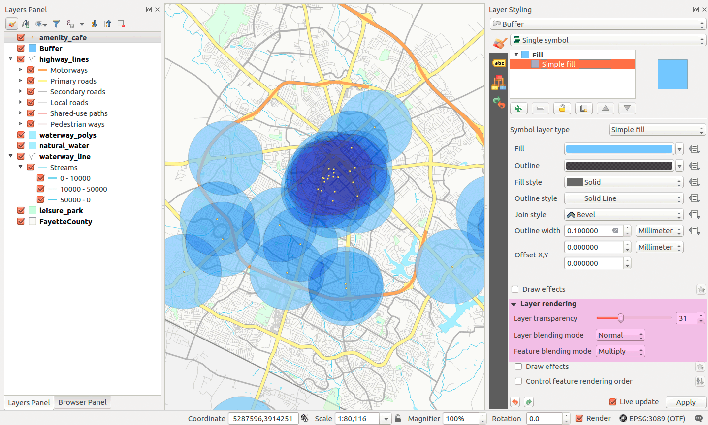
Figure 34: Using buffer tool to show density of areas served
By adding these cartographic techniques we visualize which areas have multiple cafes within a mile walk. Alternatively, and maybe more critically, we can show which areas don't have cafes nearby. This might seem trivial, but what if we were mapping areas within a mile of a bus stop? How far would you walk to catch a bus?
You might have thought you escaped SQL functions this lesson. Let's end this module by showing the same geoprocessing technique in SQL. Execute and load the following queries and compare the differences:
/* Buffer function to find areas within one mile of any cafe */
select
st_buffer(geom, 5280) as geom,
amenity_cafe.name,
amenity_cafe.cuisine,
amenity_cafe.internet_access
from
amenity_cafe
This query makes the same geometry as the vector tool we used earlier, but we're controlling what attributes we keep in the output layer. We can dissolve all polygons using the st_collect() function, which drops the input layer's attributes:
/* Buffer function to find areas within one mile of ALL cafes */
select
st_buffer(st_collect(geom), 5280) as geom
from
amenity_cafe
I think we can observe that SQL provides a concise way to achieve the same results. Both spatial databases and QGIS use the same library, GEOS, to do this type of geoprocessing. In the next we'll explore these approaches in more detail.
Before we begin any geoprocessing, it's important to recognize we have two CRSs we need to consider:
In an online mapping workflow, we harvest and publish our spatial data in a Geographic Coordinate System, such as WGS84. However, when we need to perform an analysis on our spatial data, we convert them to a local CRS.
Why do we do this? It's about measurement and cartographic display. WGS84 is CRS with angular units of measure. When we run tools that require a distance parameter, angular units degrees make very small numbers. More importantly, the distance between a degree is not uniform across the globe. When we display spatial layers in these CRSs, QGIS defaults to an equirectangular projection, which creates unnecessary distortion. Our task is to recognize the different CRSs and use the most appropriate one for our purposes.
Most organizations that provide GIS data, OSM included, provide their data in Geographic CRSs. We also call them "global" CRSs because their intention is to distribute data to a global audience. All global CRSs define how latitude and longitude fit a sphere-like object. We have only two to consider:
When we make a map, we must convert a global CRS to a local CRS, which is called a Projected Coordinate System. This defines how lines of latitude and longitude fit on a plane, such as a printed page or a computer screen. These CRSs are "local" because they are tuned to specific locations on earth with specific applications in mind. While we have thousands of local CRSs, we are only concerned with the ones appropriate for our area. The following two families of local CRS attempt to minimize distortion for the areas (or zones) they cover:
For mapping continents and the entire planet, we have different projected coordinate systems to consider. While covering large areas are not "local," these coordinate systems are "localized" and tuned for the area they cover. The ones we have used in class are the following:
For help finding a specific CRS for an area on earth, use epsg.io to search by location.
Understanding the layers' spatial reference systems is important when geoprocessing. You can only reliably measure between layers that share the same projected coordinate system. We'll now ensure that our newly created layers are all in the same projection (EPSG:2283) and not relying on on-the-fly transformation before doing geoprocessing.
OpenStreetMap data: © OSM contributors
Brabham, D. C. (2012). The Myth of Amateur Crowds. Information, Communication & Society, 15(3), 394–410.
Haklay, M. (2010). How good is volunteered geographical information? A comparative study of OpenStreetMap and Ordnance Survey datasets. Environment and Planning B: Planning and Design, 37(4), 682–703.
Haklay, M. (2013). Neogeography and the delusion of democratization. Environment and Planning A, 45(1), 55–69.
Harley, J. B. (1989). Deconstructing the Map. Cartographica: the International Journal for Geographic Information and Geovisualization, 26(2), 1–20.
Stephens, M. (2013). Gender and the GeoWeb: divisions in the production of user-generated cartographic information. GeoJournal, 78(6), 981–996.